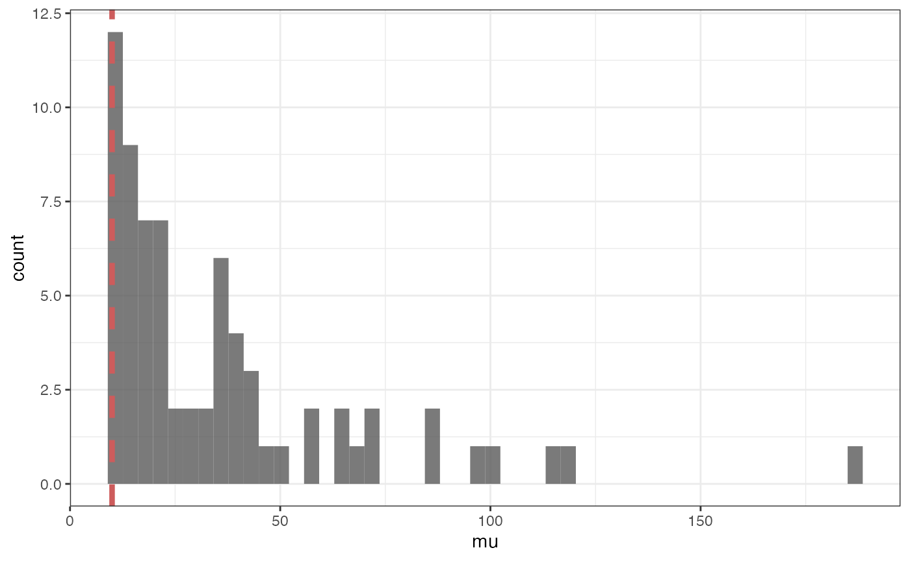
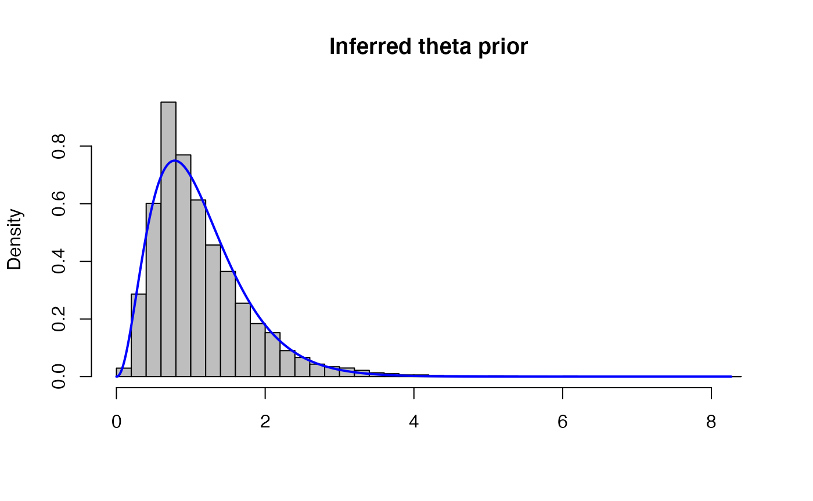
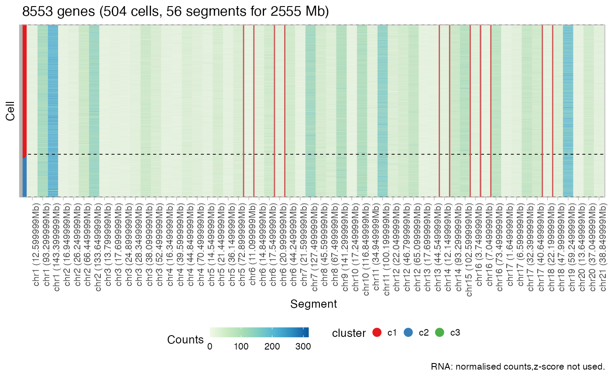
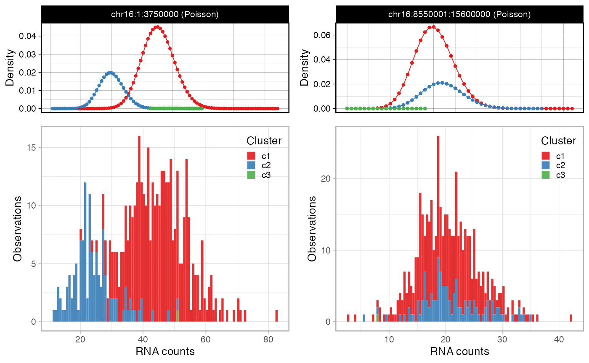
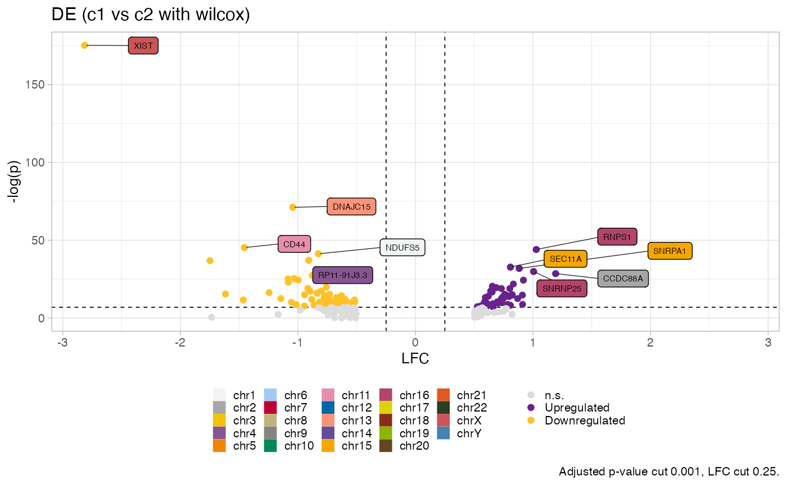

In this vignette we will show a end-to-end example of rcongas on the PDX dataset used in the papers.
We start with the two main inputs of Rcongas: a CNV data.frame and a count matrix
require(Rcongas)
require(rehsape2)
require(ggplot2)
require(dplyr)
# required for using as an input sparse matrices
require(Matrix)
require(sparseMatrixStats)
data("congas_example")
# genes by cells matrix
count_matrix <- congas_example$data$raw %>% reshape2::acast(gene ~ cell, value.var = "n", fill = 0)
# or do some preprocessing like in Seurat, the functions get the matrix in Seurat format so we have to transpose
count_matrix <- Rcongas:::preprocess_sc(count_matrix %>% t,filter_upper_quantile = T, perc_cells_gene_expr = 0.05,upper_quantile = 0.95) %>% t## Filtering cells## ✓ removed 1966 cells from a total of 2470## Filtering genes## ✓ removed 11056 genes from a total of 21247## Filtering genes on quantile## ✓ removed 510 genes from a total of 10191
# the cnv_table has 4 mandatory coloumns chr,from,to and tot (bulk CNV value)
cnv_table <- congas_example$data$cnv %>% dplyr::select(chr,from,to,tot)
cnv_table %>% head(5)## # A tibble: 5 × 4
## chr from to tot
## <chr> <int> <int> <int>
## 1 chr1 1 12600000 1
## 2 chr1 12600001 60150000 2
## 3 chr1 61200001 77100000 2
## 4 chr1 78750001 156000000 2
## 5 chr1 156000001 249300000 3Then we use the function init to construct a new Rcongas
object
# You might try with and without correct_bins which remove some small segments and them merge
# fragmented pieces with the same CN, as it sometimes can include some spurois correlations
input_rcongas <- init(data = count_matrix , cnv_data = cnv_table, description = "congas_example", reference_genome = "hg19", online = FALSE, correct_bins = FALSE)## ℹ Extracting gene data from reference.## ✓ Validated input(s): 504 cells, 9681 genes and 70 CNA segments.## Loading required package: biomaRt## ℹ Processing input counts.## ℹ Assembly Rcongas object.## ! Mapping inconsistent for 345 genes out 8571, removing those from the raw data table.## ℹ Retaining 35.6 Mb long-format tibble data with 1531708 points, matrix was 37.9 Mb.## ℹ Object size in memory: 36.8 Mb.## ── [ Rcongas ] congas_example ──────────────────────────────────────────────────## → Data: 504 cells with 8199 genes, aggregated in 70 segments.## ! Clusters: not available.We can have a look at the distribution of the number of genes in the segments and filter accordingly
input_rcongas$data$cnv %>% ggplot(., aes(mu)) + geom_histogram(bins = 50, alpha = 0.8) + geom_vline(xintercept = 10, linetype = "dashed", color = "indianred", size = 1.5) + theme_bw()
new_cnv_table <- filter_segments_and_return_cnv_table(input_rcongas,mu = 10, length = 0, merge = TRUE)
input_rcongas <- init(data = count_matrix, cnv_data = new_cnv_table, description = "congas_example", reference_genome = "hg19", online = FALSE, correct_bins = FALSE)## ℹ Extracting gene data from reference.## ✓ Validated input(s): 504 cells, 9681 genes and 56 CNA segments.## ℹ Processing input counts.## ℹ Assembly Rcongas object.## ! Mapping inconsistent for 338 genes out 8579, removing those from the raw data table.## ℹ Retaining 35.6 Mb long-format tibble data with 1531708 points, matrix was 37.9 Mb.## ℹ Object size in memory: 36.8 Mb.## ── [ Rcongas ] congas_example ──────────────────────────────────────────────────## → Data: 504 cells with 8215 genes, aggregated in 56 segments.## ! Clusters: not available.
# automatic tuning of library size
theta_vals <- approx_theta_prior_params(input_rcongas, plot = T)
# in general it is wise to set normalize_by_segs = TRUE when you have more than 1000/1200 cells to avoid overfitting
# Try method = BIC for a less conservative clustering
inference <- best_cluster(input_rcongas, clusters = 1:5, model = "MixtureGaussian", param_list = list(theta_shape = theta_vals[1], theta_rate = 1),
steps = 500, lr = 0.01, MAP = TRUE, seed = 3, normalize_by_segs = FALSE, method = "ICL")## ! Removing clusters collapsed to 0 probability!## [1] "Best number of cluster is 4"
plot_counts_rna_segments(inference)
It is especially important to look at the actual distributions as CONGAS my have a slight tendency to overfit, especially when dealing with very heterogeneous datasets or when there is high level of variance in the library size factors.
library(gridExtra)## Warning: package 'gridExtra' was built under R version 4.1.1##
## Attaching package: 'gridExtra'## The following object is masked from 'package:dplyr':
##
## combine
high_segs <- highlights(inference, alpha = 0.01) %>% filter(highlight) %>% pull(segment_id)
segs_p <- plot_segment_density(inference, segments_ids = high_segs, sum_denominator = TRUE)## Warning: `guides(<scale> = FALSE)` is deprecated. Please use `guides(<scale> =
## "none")` instead.## Warning: `guides(<scale> = FALSE)` is deprecated. Please use `guides(<scale> =
## "none")` instead.
We can also automatically calculate the differential expression
between cluster 1 and 2. In order to do so we have to pass both the
fitted object and the count matrix to the calculate_DE
function. The underlying implementation is based on
Seurat.
de_object <- calculate_DE(x = inference, input = count_matrix, clone1 = "c1", clone2 = "c2", method = "wilcox", logfc.threshold = 0.5)## ## ── Differential Expression analysis with Seurat ────────────────────────────────##
## ┌────────────────────────────────────┐
## │ │
## │ Groups: c1 vs c2; using wilcox │
## │ │
## └────────────────────────────────────┘## - With normalisation: TRUE; LFC threshold 0.5.## Loading required package: Seurat## Warning: package 'Seurat' was built under R version 4.1.1## Attaching SeuratObject## ✓ Found 188 EG at alpha level 0.05.The function returns a Rcongas object with a new field
$DE which stores the parameters used to perform the DE and
the table of differentially expressed genes with adjusted p values (BH)
and log2FC.
plot_DE_volcano(de_object)